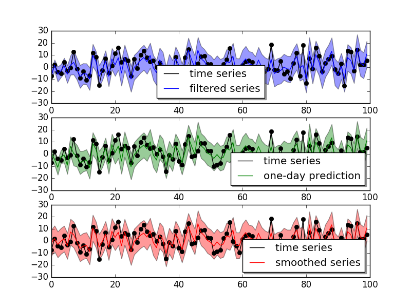
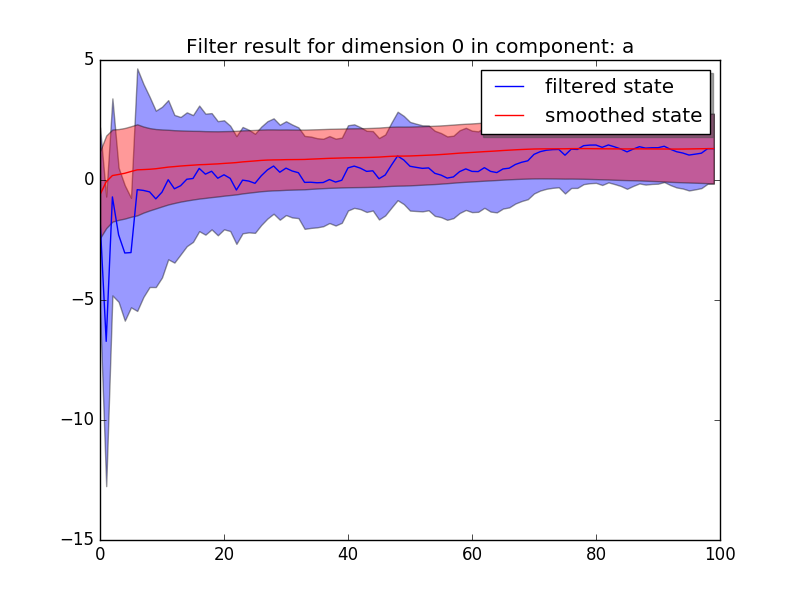
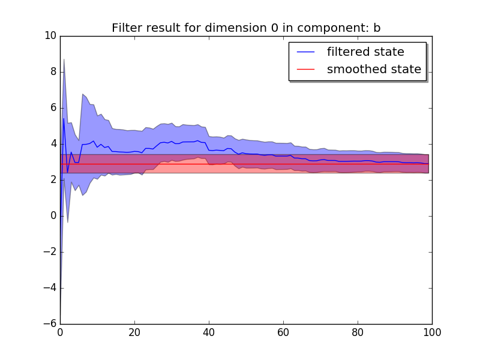

A simple example¶
In this section, we give a simple example on linear regression to illustrate how to use the pydlm for analyzing data. The data is generated via the following process:
import numpy as np
n = 100
a = 1.0 + np.random.normal(0, 5, n) # the intercept
x = np.random.normal(0, 2, n) # the control variable
b = 3.0 # the coefficient
y = a + b * x
In the above code, a is the baseline random walk centered around 1.0 and b is the coefficient for a control variable. The goal is to decompose y and learn the value of a and b. We first build the model:
from pydlm import dlm, trend, dynamic
mydlm = dlm(y)
mydlm = mydlm + trend(degree=0, discount=0.98, name='a', w=10.0)
mydlm = mydlm + dynamic(features=[[v] for v in x], discount=1, name='b', w=10.0)
In the model, we add two components trend and
dynamic. The trend a is one of the systematical components
that used to characterize a time series, and trend is particularly
suitable for this case. degree=0 indicates this is a constant and
degree=1 indicates a line and so on so forth. It has a
discount factor of 0.98 as we believe the baseline can gradually shift
overtime and we specify a prior covariance with 10.0 on the
diagonal. The dynamic component b is modeling the regression
component. We specify its discounting factor to be 1.0 since we
believe b should be a constant. The dynamic class only accepts 2-d
list for feature arugment (since the control variable could be
multi-dimensional). Thus, we change x to 2d list. In addition, we
believe these two processes a and b evolve independently and set
(This is currently the default assumption, so actually no need to set):
mydlm.evolveMode('independent')
This can also be set to ‘dependent’ if the computation efficiency is a concern. The default prior on the covariance of each component is a diagonal matrix with 1e7 on the diagonal, we changed this value in building the component (more details please refer to the user manual). The prior on the observational noise (default to 1.0) can be set by:
mydlm.noisePrior(2.0)
We then fit the model by typing:
mydlm.fit()
After some information printed on the screen, we are done (yah! :p) and we can fetch and examine our results. We first visualize the fitted results and see how well the model fits the data:
mydlm.plot()
The result shows

It looks pretty nice for the one-day ahead prediction accuracy. We can also plot the two coefficients a and b and see how they change when more data is added:
mydlm.turnOff('predict')
mydlm.plotCoef(name='a')
mydlm.plotCoef(name='b')
and we have
{kind=link}

{kind=link}

We see that the latent state of b quickly shift from 0 (which is our initial guess on the parameter) to around 3.0 and the confidence interval explodes and then narrows down as more data is added.
Once we are happy about the result, we can fetch the results::
# get the smoothed results
smoothedResult = mydlm.getMean(filterType='backwardSmoother')
smoothedVar = mydlm.getVar(filterType='backwardSmoother')
smoothedCI = mydlm.getInterval(filterType='backwardSmoother')
# get the coefficients
coef_a = mydlm.getLatentState(filterType='backwardSmoother', name='a')
coef_a_var = mydlm.getLatentCov(filterType='backwardSmoother', name='a')
coef_b = mydlm.getLatentState(filterType='backwardSmoother', name='b')
coef_b_var = mydlm.getLatentCov(filterType='backwardSmoother', name='b')
We can then use coef_a and coef_b for further analysis. If we want to predict the future observation based on the current data, we can do:
# prepare the new feature
newData1 = {'b': [5]}
# one-day ahead prediction from the last day
(predictMean, predictVar) = mydlm.predict(date=mydlm.n-1, featureDict=newData1)
# continue predicting for next day
newData2 = {'b': [4]}
(predictMean, predictVar) = mydlm.continuePredict(featureDict=newData2)
# continue predicting for the third day
newData3 = {'b': [3]}
(predictMean, predictVar) = mydlm.continuePredict(featureDict=newData3)
or using the simpler dlm.predictN():
newData = {'b': [[5], [4], [3]]}
(predictMean, predictVar) = mydlm.predictN(N=3, date=mydlm.n-1, featureDict=newData)